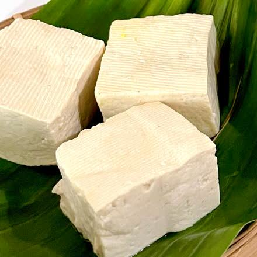
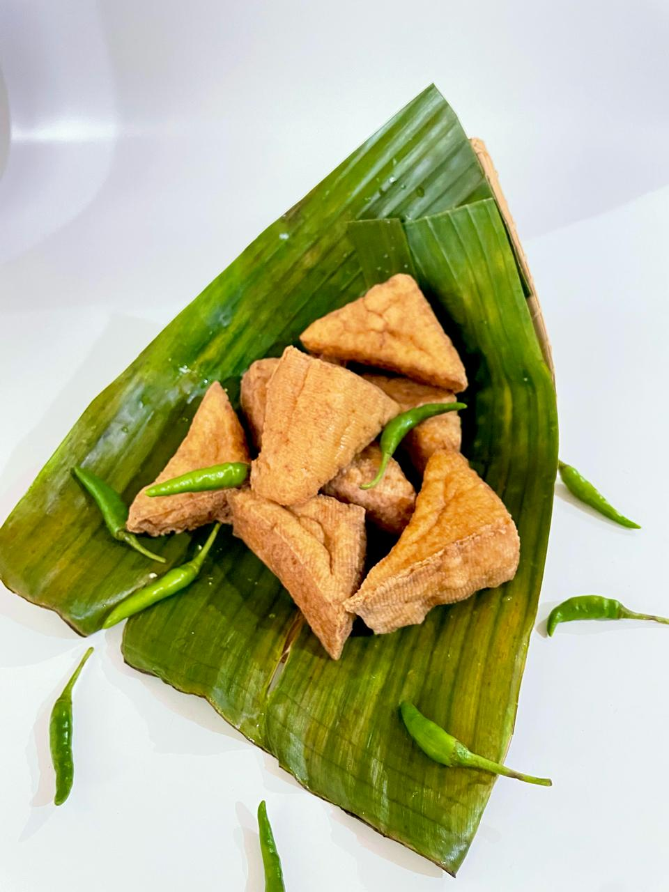
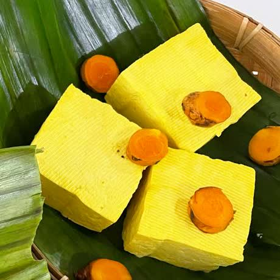
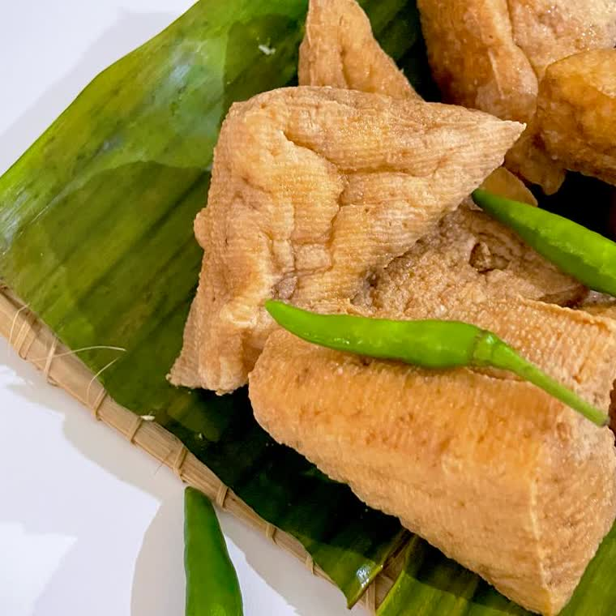

Tahu Putih
Tekstur lembut dan kenyal, dibuat dari kacang kedelai pilihan. Serba bisa: digoreng, dikukus, atau masuk sayur.
Tahu rumahan • Cigombong, Bogor
Tahu segar dari kedelai pilihan, dibuat setiap hari tanpa bahan pengawet. Sekali coba, balik lagi.

Tentang kami
Tahu Pak Eman berdiri sejak 1986 di Cigombong, Bogor. Kami mengolah kacang kedelai pilihan menjadi tahu yang segar setiap hari, tanpa bahan pengawet, dengan kunyit sebagai pewarna alami yang memberi cita rasa khas.
Produk kami
Pilihan harga Rp3.000–Rp6.000. Konfirmasikan jenis, jumlah, dan harga pesanan lewat WhatsApp.

Tekstur lembut dan kenyal, dibuat dari kacang kedelai pilihan. Serba bisa: digoreng, dikukus, atau masuk sayur.

Warna kuning alami dari kunyit asli, bukan pewarna buatan. Gurih dan wangi khas rempah.

Gurih dan matang sempurna, siap santap untuk camilan atau lauk. Paling mantap dimakan dengan cabai.
Cerita pelanggan
★★★★★
"Rasa tahu bapak eman enak banget, tahu gorengnya kriuk bngt."
★★★★★
"Enak tahunya tidak terlalu besar, teksturnya lembut d dlem Crunchy diluar dan pas ukurannya"
Cuplikan ulasan Google Maps, dibaca 22 Nov 2026. Baca ulasan lainnya ↗
Kenapa pilih kami
Tahu rumahan dari Cigombong, Bogor, dengan perjalanan panjang sejak 1986.
Dibuat tanpa bahan pengawet. Tahu segar untuk menu harianmu.
Warna kuning tahu berasal dari kunyit asli, bukan pewarna buatan.
Diolah setiap hari dari kedelai pilihan. Pilih tahu putih, kuning, atau goreng.
Alamat email resmi belum tersedia. Untuk sementara, hubungi kami lewat telepon atau WhatsApp.
Sebelum pesan
Klik tombol WhatsApp, lalu sebutkan jenis tahu dan jumlah yang kamu inginkan. Tanyakan stok dan harga langsung sebelum memesan.
Untuk informasi bahan dan status sertifikasi halal, tanyakan langsung lewat WhatsApp.
Daya tahan bergantung pada jenis tahu dan cara penyimpanan. Tanyakan saran penyimpanan saat memesan.
Konfirmasikan jangkauan pengantaran, biaya, dan minimal pesanan lewat WhatsApp sebelum memesan.
Kemitraan Tahu Pak Eman
Tertarik jadi mitra atau reseller Tahu Pak Eman? Ceritakan rencana usahamu. Diskusikan kebutuhan pasokan langsung dari pabrik, pilihan produk, dan cara kerja sama melalui WhatsApp.
Harga mitra, ketersediaan pasokan, dan ketentuan kerja sama dikonfirmasi langsung sebelum ada kesepakatan.
Lokasi pabrik